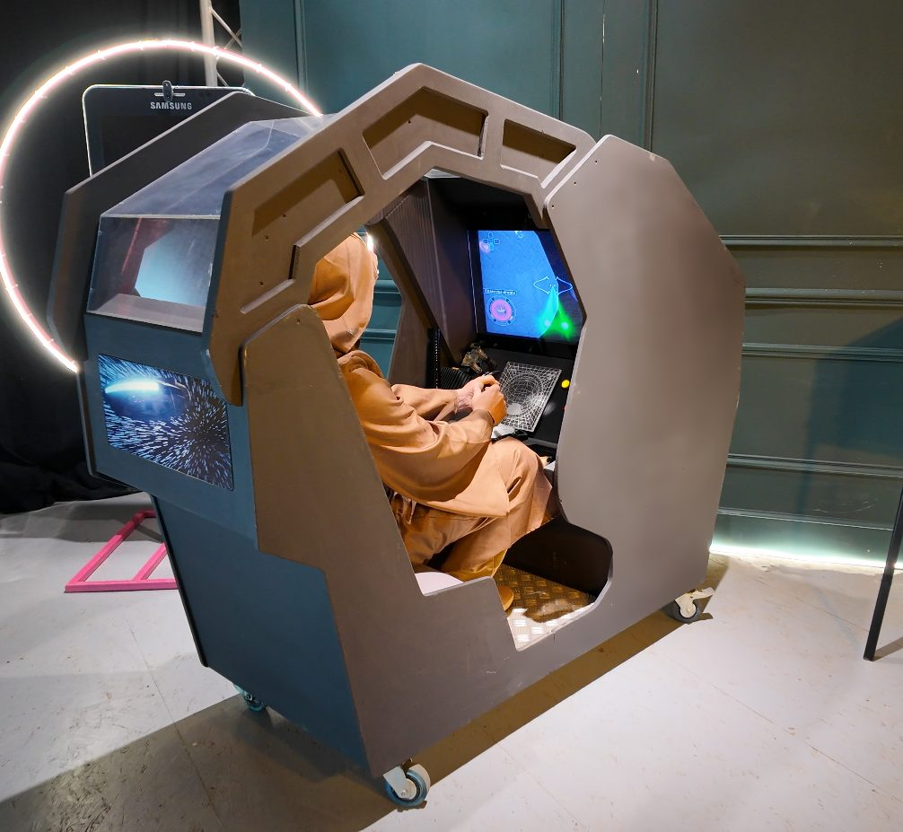
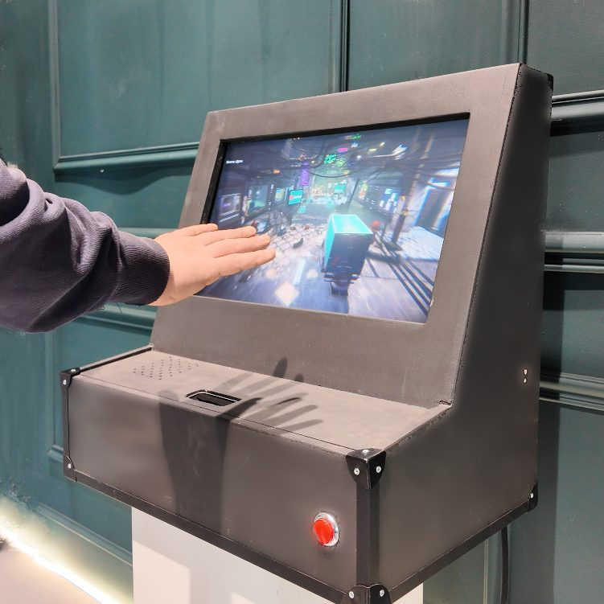

Flipper numérique
Le flipper sans limites : des dizaines de tables, à un ou deux joueurs.

L’animation
Un flipper numérique : une seule borne, des dizaines de tables au choix. Il voyage avec les Modules Pixel : pas de livraison en plus.
Soirée et afterwork : un classique en libre-service, sans animateur.
En trois étapes
On installe le flipper : une borne, des dizaines de tables.
Seul ou à deux, on lance la bille.
Parties courtes, beaucoup de passage, tournois possibles.
Autres animations

Game & Watch géant
Une console de poche rétro, en version géante sur pied. Elle attire l’œil de loin.
Voir l’animation →
Simulateur cockpit
Une borne d’arcade dans un cockpit fermé : on s’installe, on pilote.
Voir l’animation →
HoverGame
Une borne qui se joue sans la toucher : un capteur suit le survol de la main.
Voir l’animation →Flipper numérique pour votre événement ?
Donnez-nous la date, le lieu et le nombre d’invités : nous vous répondons avec une formule et un devis détaillé.